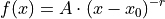

hyperspy._components.power_law module
- class hyperspy._components.power_law.PowerLaw(A=1000000.0, r=3.0, origin=0.0, left_cutoff=0.0, module='numexpr', compute_gradients=False, **kwargs)
Bases:
hyperspy._components.expression.ExpressionPower law component.

Variable
Parameter

A

r

origin
- Parameters
The left_cutoff parameter can be used to set a lower threshold from which the component will return 0.
Create a component from a string expression.
It automatically generates the partial derivatives and the class docstring.
- Parameters
expression (str) – Component function in SymPy text expression format with substitutions separated by ;. See examples and the SymPy documentation for details. In order to vary the components along the signal dimensions, the variables x and y must be included for 1D or 2D components. Also, if module is “numexpr” the functions are limited to those that numexpr support. See its documentation for details.
name (str) – Name of the component.
position (str, optional) – The parameter name that defines the position of the component if applicable. It enables interative adjustment of the position of the component in the model. For 2D components, a tuple must be passed with the name of the two parameters e.g. (“x0”, “y0”).
module ({"numpy", "numexpr", "scipy"}, default "numpy") – Module used to evaluate the function. numexpr is often faster but it supports fewer functions and requires installing numexpr.
add_rotation (bool, default False) – This is only relevant for 2D components. If True it automatically adds rotation_angle parameter.
rotation_center ({None, tuple}) – If None, the rotation center is the center i.e. (0, 0) if position is not defined, otherwise the center is the coordinates specified by position. Alternatively a tuple with the (x, y) coordinates of the center can be provided.
rename_pars (dictionary) – The desired name of a parameter may sometimes coincide with e.g. the name of a scientific function, what prevents using it in the expression. rename_parameters is a dictionary to map the name of the parameter in the expression` to the desired name of the parameter in the Component. For example: {“_gamma”: “gamma”}.
compute_gradients (bool, optional) – If True, compute the gradient automatically using sympy. If sympy does not support the calculation of the partial derivatives, for example in case of expression containing a “where” condition, it can be disabled by using compute_gradients=False.
**kwargs – Keyword arguments can be used to initialise the value of the parameters.
Note
As of version 1.4, Sympy’s lambdify function, that the
Expressioncomponents uses internally, does not support the differentiation of some expressions, for example those containing a “where” condition. In such cases, the gradients can be set manually if required.Examples
The following creates a Gaussian component and set the initial value of the parameters:
>>> hs.model.components1D.Expression( ... expression="height * exp(-(x - x0) ** 2 * 4 * log(2)/ fwhm ** 2)", ... name="Gaussian", ... height=1, ... fwhm=1, ... x0=0, ... position="x0",)
Substitutions for long or complicated expressions are separated by semicolumns:
>>> expr = 'A*B/(A+B) ; A = sin(x)+one; B = cos(y) - two; y = tan(x)' >>> comp = hs.model.components1D.Expression( ... expression=expr, ... name='my function') >>> comp.parameters (<Parameter one of my function component>, <Parameter two of my function component>)
- estimate_parameters(signal, x1, x2, only_current=False, out=False)
Estimate the parameters for the power law component by the two area method.
- Parameters
signal (Signal1D instance) –
x1 (float) – Defines the left limit of the spectral range to use for the estimation.
x2 (float) – Defines the right limit of the spectral range to use for the estimation.
only_current (bool) – If False, estimates the parameters for the full dataset.
out (bool) – If True, returns the result arrays directly without storing in the parameter maps/values. The returned order is (A, r).
- Returns
- Return type
{bool, tuple of values}